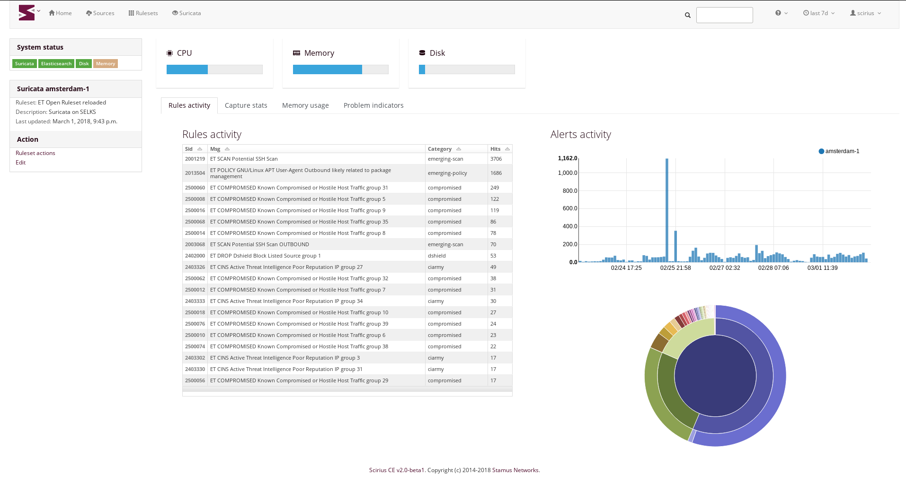
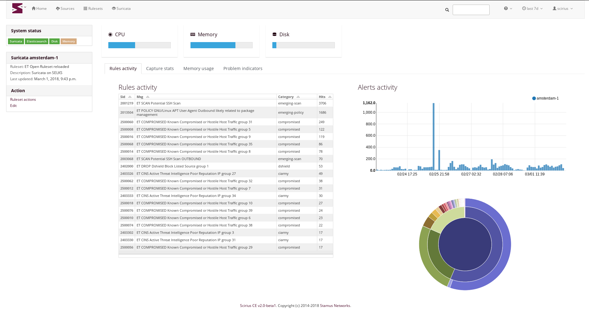

Introduction¶
Scirius Community Edition is a web interface dedicated to Suricata ruleset management. It handles the rules file and update associated files.
Scirius CE is developed by Stamus Networks and is available under the GNU GPLv3 license.
Scirius Community Edition is a web interface dedicated to Suricata ruleset management. It handles the rules file and update associated files.
Scirius CE is developed by Stamus Networks and is available under the GNU GPLv3 license.